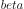
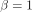
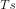
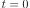
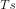
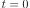

13. Mise en Forme¶
Ce chapitre traite de la mise en forme, des interférences inter-symboles, du filtrage adapté et des filtres à cosinus surélevé. À la fin, nous utilisons Python pour ajouter la mise en forme aux symboles BPSK. Vous pouvez considérer cette section comme la deuxième partie du chapitre sur les filtres, où nous approfondissons les mises en forme.
Interférence inter-symboles (ISI)¶
Dans le chapitre Filtres, nous avons appris que les symboles/impulsions en forme de blocs utilisent une quantité excessive de spectre, et que nous pouvons réduire considérablement la quantité de spectre utilisée en ” façonnant ” nos impulsions. Cependant, vous ne pouvez pas utiliser n’importe quel filtre passe-bas, sinon vous risquez d’obtenir des interférences inter-symboles (ISI), où les symboles se mélangent et interfèrent les uns avec les autres.
Lorsque nous transmettons des symboles numériques, nous les transmettons dos à dos (au lieu d’attendre un certain temps entre eux). Lorsque vous appliquez un filtre de mise en forme, il allonge l’impulsion dans le domaine temporel (afin de la condenser en fréquence), ce qui entraîne un chevauchement des symboles adjacents. Ce chevauchement n’est pas un problème, à condition que votre filtre de mise en forme réponde à un critère: la somme de toutes les impulsions doit être égale à zéro à chaque multiple de notre période de symbole  , sauf pour l’une des impulsions. L’idée est mieux comprise grâce à la visualisation suivante:
, sauf pour l’une des impulsions. L’idée est mieux comprise grâce à la visualisation suivante:

Comme vous pouvez le voir, à chaque intervalle de , il y a un pic d’une impulsion tandis que le reste des impulsions sont à 0 (elles traversent l’axe des x). Lorsque le récepteur échantillonne le signal, il le fait au moment parfait (au pic des impulsions), ce qui signifie que c’est le seul point dans le temps qui compte. Il existe généralement un bloc de synchronisation des symboles au niveau du récepteur qui garantit que les symboles sont échantillonnés aux pics.
Filtre Adapté¶
Une astuce que nous utilisons dans les communications sans fil s’appelle le filtrage adapté. Pour comprendre le filtrage adapté, vous devez d’abord comprendre ces deux points:
- Les impulsions dont nous avons parlé ci-dessus doivent seulement être parfaitement alignées au niveau du récepteur avant l’échantillonnage. Jusqu’à ce moment-là, l’existence d’une ISI n’a pas vraiment d’importance, c’est-à-dire que les signaux peuvent être envoyés dans l’air avec une ISI et tout va bien.
- Nous voulons un filtre passe-bas dans notre émetteur pour réduire la quantité de spectre que notre signal utilise. Mais le récepteur a également besoin d’un filtre passe-bas pour éliminer autant de bruit/interférences que possible à côté du signal. Par conséquent, nous avons un filtre passe-bas à l’émetteur (Tx) et un autre au récepteur (Rx), puis l’échantillonnage se produit après les deux filtres (et les effets du canal sans fil).
Ce que nous faisons dans les communications modernes est de diviser le filtre de mise en forme des impulsions de manière égale entre la Tx et la Rx. Il n’est pas nécessaire qu’il s’agisse de filtres identiques, mais, en théorie, le filtre linéaire optimal pour maximiser le rapport signal/bruit en présence d’un bruit blanc gaussien (AWGN) est d’utiliser le même filtre à la fois à la Tx et à la Rx. Cette stratégie est appelée le concept de “filtre adapté”.
Une autre façon d’envisager les filtres appariés est que le récepteur corrèle le signal reçu avec le signal modèle connu. Le signal modèle est essentiellement constitué des impulsions envoyées par l’émetteur, indépendamment des déphasages/amplitudes qui leur sont appliqués. Rappelez-vous que le filtrage est effectué par convolution, qui est en fait une corrélation (en fait, elles sont mathématiquement identiques lorsque le modèle est symétrique). Ce processus de corrélation du signal reçu avec le modèle nous donne notre meilleure chance de récupérer ce qui a été envoyé, et c’est pourquoi il est théoriquement optimal. Par analogie, pensez à un système de reconnaissance d’images qui recherche des visages à l’aide d’un modèle de visage et d’une corrélation 2D :

Diviser un Filtre en Deux¶
Comment fait-on pour diviser un filtre en deux? La convolution est associative, ce qui signifie:

Imaginons que  soit notre signal d’entrée, et que
soit notre signal d’entrée, et que  et
et  soient des filtres. Filtrer avec , puis revient à filtrer avec un filtre égal à
soient des filtres. Filtrer avec , puis revient à filtrer avec un filtre égal à  .
.
Rappelons également que la convolution dans le domaine temporel est une multiplication dans le domaine fréquentiel:

Pour diviser un filtre en deux, vous pouvez prendre la racine carrée de la réponse en fréquence.

Filtres de Mise en Forme Spécifiques¶
Nous savons que nous voulons :
- Concevoir un filtre qui réduit la largeur de bande de notre signal (pour utiliser moins de spectre) et toutes les impulsions sauf une doivent s’additionner à zéro à chaque intervalle de symbole.
- Diviser le filtre en deux, en plaçant une moitié dans la Tx et l’autre dans la Rx.
Examinons quelques filtres spécifiques qui sont couramment utilisés pour la mise en forme.
Filtre Cosinus Surélevé¶
Le filtre de mise en forme le plus populaire semble être le filtre “cosinus surélevé”. C’est un bon filtre passe-bas pour limiter la largeur de bande que notre signal occupera, et il a aussi la propriété de ramener la somme à zéro à des intervalles de :
Notez que le graphique ci-dessus est dans le domaine temporel. Il représente la réponse impulsionnelle du filtre. Le paramètre  est le seul paramètre du filtre à cosinus surélevé. Il détermine la vitesse à laquelle le filtre se réduit dans le domaine temporel, ce qui est inversement proportionnel à la vitesse à laquelle il se réduit en fréquence:

La raison pour laquelle on l’appelle le filtre à cosinus surélevé est que le domaine de fréquence lorsque  est un demi-cycle d’une onde cosinusoïdale, surélevée pour s’asseoir sur l’axe des abscisses.
L’équation qui définit la réponse impulsionnelle du filtre à cosinus surélevé est la suivante:

Vous trouverez de plus amples informations sur la fonction  ici.
ici.
Rappelez-vous: nous partageons ce filtre entre la Tx et la Rx de manière égale. Entrez dans le filtre racine cosinus surélevé (RRC en anglais pour Root Raised Cosine)!
Filtre Racine Cosinus Surélevé¶
Le filtre racine cosinus surélevé (RRC) est ce que nous mettons réellement en œuvre dans nos Tx et Rx. Combinés, ils forment un filtre normal à cosinus surélevé, comme nous l’avons vu. Comme la division d’un filtre en deux implique une racine carrée dans le domaine de la fréquence,la réponse impulsionnelle devient un peu désordonnée :

Heureusement, il s’agit d’un filtre très utilisé et il existe de nombreuses implémentations, dont les suivantes in Python.
Autres Filtres de Mise en Forme des Impulsions¶
Parmi les autres filtres, citons le filtre gaussien, dont la réponse impulsionnelle ressemble à une fonction gaussienne. Il existe également un filtre sinc qui est équivalent au filtre à cosinus surélevé lorsque  . Le filtre sinc est plutôt un filtre idéal, c’est-à-dire qu’il élimine les fréquences nécessaires sans grande région de transition.
. Le filtre sinc est plutôt un filtre idéal, c’est-à-dire qu’il élimine les fréquences nécessaires sans grande région de transition.
Facteur Roll-Off¶
Examinons le paramètre  . Il s’agit d’un nombre compris entre 0 et 1, appelé facteur de “roll-off” ou parfois “excès de bande passante”. Il détermine à quelle vitesse, dans le domaine temporel, le filtre se réduit à zéro. Rappelez-vous que, pour être utilisée comme un filtre, la réponse impulsionnelle doit décroître jusqu’à zéro des deux côtés :
. Il s’agit d’un nombre compris entre 0 et 1, appelé facteur de “roll-off” ou parfois “excès de bande passante”. Il détermine à quelle vitesse, dans le domaine temporel, le filtre se réduit à zéro. Rappelez-vous que, pour être utilisée comme un filtre, la réponse impulsionnelle doit décroître jusqu’à zéro des deux côtés :

Plus le nombre de taps du filtre requis est élevé, plus est faible. Lorsque , la réponse impulsionnelle n’atteint jamais complètement zéro, nous essayons donc d’obtenir aussi bas que possible sans causer d’autres problèmes. Plus le roll-off est faible, plus nous pouvons créer un signal compact en fréquence pour un débit de symboles donné, ce qui est toujours important.
Une équation courante utilisée pour calculer approximativement la largeur de bande, en Hz, pour un débit de symboles et un facteur Roll-Off donnés est la suivante :

 est le débit de symboles en Hz. Pour les communications sans fil, nous aimons généralement un roll-off entre 0,2 et 0,5. En règle générale, un signal numérique qui utilise le rythme symbole va occuper un peu plus de de spectre, y compris les parties positives et négatives du spectre. Une fois que nous convertissons et transmettons notre signal, les deux côtés sont certainement importants. Si nous transmettons une QPSK à 1 million de symboles par seconde (MSps), elle occupera environ 1,3 MHz. Le débit de données sera de 2 Mbps (rappelons que la QPSK utilise 2 bits par symbole), y compris les redondances du codage de canal et les en-têtes de trame.
est le débit de symboles en Hz. Pour les communications sans fil, nous aimons généralement un roll-off entre 0,2 et 0,5. En règle générale, un signal numérique qui utilise le rythme symbole va occuper un peu plus de de spectre, y compris les parties positives et négatives du spectre. Une fois que nous convertissons et transmettons notre signal, les deux côtés sont certainement importants. Si nous transmettons une QPSK à 1 million de symboles par seconde (MSps), elle occupera environ 1,3 MHz. Le débit de données sera de 2 Mbps (rappelons que la QPSK utilise 2 bits par symbole), y compris les redondances du codage de canal et les en-têtes de trame.
Exercise Python¶
En guise d’exercice Python, filtrons et façonnons quelques impulsions. Nous utiliserons des symboles BPSK afin de faciliter la visualisation. Avant l’étape de mise en forme des impulsions, la BPSK consiste à transmettre des 1 ou des -1 avec la partie “Q” égale à zéro. Avec Q égal à zéro, nous pouvons tracer la partie I uniquement, et c’est plus facile à regarder.
Dans cette simulation, nous utiliserons 8 échantillons par symbole et, au lieu d’utiliser un signal de type onde carrée composé de 1 et de -1, nous utiliserons un train d’impulsions. Lorsque vous faites passer une impulsion dans un filtre, la sortie est la réponse impulsionnelle (d’où le nom). Par conséquent, si vous voulez une série d’impulsions, vous devez utiliser des impulsions entrecoupées de zéros pour éviter les impulsions carrées.
import numpy as np
import matplotlib.pyplot as plt
from scipy import signal
num_symbols = 10
sps = 8
bits = np.random.randint(0, 2, num_symbols) # les données a envoyées de 1's and 0's
x = np.array([])
for bit in bits:
pulse = np.zeros(sps)
pulse[0] = bit*2-1 # définir la première valeur à 1 ou -1
x = np.concatenate((x, pulse)) # ajouter les 8 échantillons au signal
plt.figure(0)
plt.plot(x, '.-')
plt.grid(True)
plt.show()

A ce stade, nos symboles sont toujours des 1 et des -1. Ne vous laissez pas emporter par le fait que nous avons utilisé des impulsions. En fait, il est peut-être plus facile de ne pas visualiser la réponse des impulsions, mais plutôt d’y penser comme à un tableau :
bits: [0, 1, 1, 1, 1, 0, 0, 0, 1, 1]
Symboles BPSK: [-1, 1, 1, 1, 1, -1, -1, -1, 1, 1]
Application de 8 échantillons par symbole: [-1, 0, 0, 0, 0, 0, 0, 0, 1, 0, 0, 0, 0, 0, 0, 0, 1, 0, 0, 0, 0, 0, 0, 0, ...]
Nous allons créer un filtre en cosinus surélevé en utilisant un de 0.35, et nous allons le faire durer 101 taps pour donner au signal suffisamment de temps pour décroître jusqu’à zéro. Bien que l’équation du cosinus surélevé a besoin de la période du symbole et d’un vecteur temporel  , nous pouvons supposer une période d’échantillon** de 1 seconde pour “normaliser” notre simulation. Cela signifie que notre période de symbole  est de 8 car nous avons 8 échantillons par symbole. Notre vecteur temps sera donc une liste d’entiers. Avec la façon dont l’équation du cosinus surélevé fonctionne, nous voulons que  soit au centre. Nous allons générer un vecteur temporel de 101 longueurs, commençant à -51 et finissant à +51.
, nous pouvons supposer une période d’échantillon** de 1 seconde pour “normaliser” notre simulation. Cela signifie que notre période de symbole  est de 8 car nous avons 8 échantillons par symbole. Notre vecteur temps sera donc une liste d’entiers. Avec la façon dont l’équation du cosinus surélevé fonctionne, nous voulons que  soit au centre. Nous allons générer un vecteur temporel de 101 longueurs, commençant à -51 et finissant à +51.
# Créer notre filtre à base de cosinus surélevé
num_taps = 101
beta = 0.35
Ts = sps # Supposons que la fréquence d'échantillonnage soit de 1 Hz, donc que la période d'échantillonnage soit de 1, donc que la période du symbole soit de 8.
t = np.arange(-50, 51) # n'oubliez pas que le nombre final n'est pas inclus
h = 1/Ts*np.sinc(t/Ts) * np.cos(np.pi*beta*t/Ts) / (1 - (2*beta*t/Ts)**2)
plt.figure(1)
plt.plot(t, h, '.')
plt.grid(True)
plt.show()

Notez comment la sortie décroît définitivement vers zéro. Le fait que nous utilisions 8 échantillons par symbole détermine l’étroitesse de ce filtre et la vitesse à laquelle il décroît vers zéro. La réponse impulsionnelle ci-dessus ressemble à un filtre passe-bas typique, et il n’y a vraiment aucun moyen pour nous de savoir qu’il s’agit d’un filtre spécifique de mise en forme d’impulsion par rapport à n’importe quel autre filtre passe-bas.
Enfin, nous pouvons filtrer notre signal  et examiner le résultat. Ne vous focalisez pas trop sur l’introduction d’une boucle for dans le code fourni. Nous verrons pourquoi elle est là après le bloc de code.
et examiner le résultat. Ne vous focalisez pas trop sur l’introduction d’une boucle for dans le code fourni. Nous verrons pourquoi elle est là après le bloc de code.
# Filtrer notre signal, afin d'appliquer la mise en forme
x_shaped = np.convolve(x, h)
plt.figure(2)
plt.plot(x_shaped, '.-')
for i in range(num_symbols):
plt.plot([i*sps+num_taps//2+1,i*sps+num_taps//2+1], [0, x_shaped[i*sps+num_taps//2+1]])
plt.grid(True)
plt.show()

Le signal résultant est additionné à partir d’un grand nombre de nos réponses impulsionnelles, dont la moitié environ est d’abord multipliée par -1. Cela peut sembler compliqué, mais nous allons le faire ensemble.
Tout d’abord, il y a des échantillons transitoires avant et après les données à cause du filtre et de la façon dont la convolution fonctionne. Ces échantillons supplémentaires sont inclus dans notre transmission, mais ils ne contiennent pas réellement de “pics” d’impulsions.
Deuxièmement, les lignes verticales ont été créées dans la boucle for pour des raisons de visualisation. Elles sont destinées à montrer où se trouvent les intervalles de . Ces intervalles représentent l’endroit où ce signal sera échantillonné par le récepteur. Observez que pour les intervalles la courbe a la valeur exacte de 1.0 ou -1.0, ce qui en fait les points idéaux dans le temps pour l’échantillonnage.
Si nous devions convertir et transmettre ce signal, le récepteur devrait déterminer quand se trouvent les positions de , par exemple, en utilisant un algorithme de synchronisation des symboles. De cette façon, le récepteur sait exactement quand il doit échantillonner pour obtenir les bonnes données. Si le récepteur échantillonne un peu trop tôt ou trop tard, il obtiendra des valeurs légèrement faussées à cause de l’ISI, et s’il se trompe, il obtiendra un tas de nombres bizarres.
Voici un exemple, créé à l’aide de GNU Radio, qui illustre ce à quoi ressemble le tracé IQ (ou constellation) lorsque nous échantillonnons au bon et au mauvais moment. Les impulsions originales ont leurs valeurs binaires annotées.

Le graphique ci-dessous représente la position idéale dans le temps pour échantillonner, ainsi que le tracé du QI :

Comparez cela au pire temps d’échantillonnage. Remarquez les trois clusters dans la constellation. Nous échantillonnons directement entre chaque symbole; nos échantillons vont être très différents.

Voici un autre exemple d’un mauvais temps d’échantillonnage, quelque part entre notre cas idéal et le pire. Tenez compte des quatre groupes. Avec un SNR élevé, nous pourrions nous en sortir avec cet intervalle de temps d’échantillonnage, mais ce n’est pas conseillé.

Rappelez-vous que nos valeurs Q n’apparaissent pas sur le tracé du domaine temporel parce qu’elles sont à peu près nulles, ce qui permet aux courbes IQ de s’étendre horizontalement seulement.